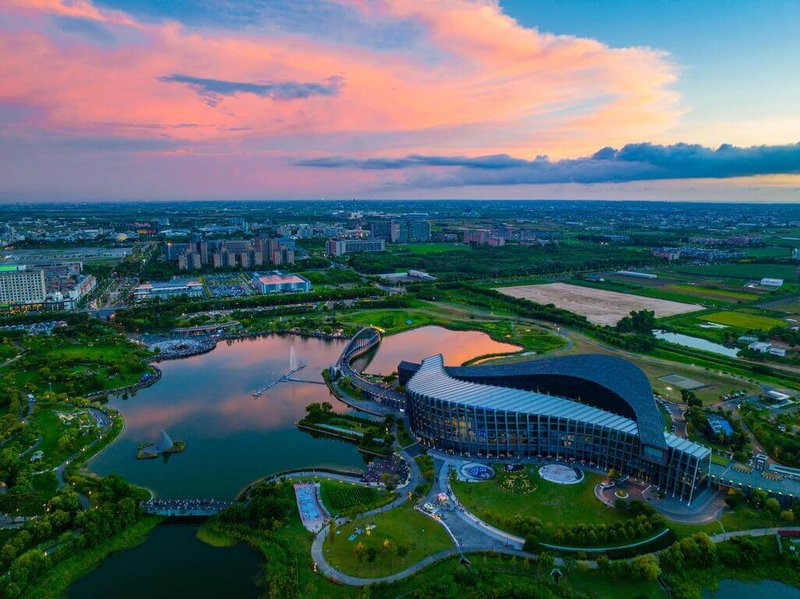
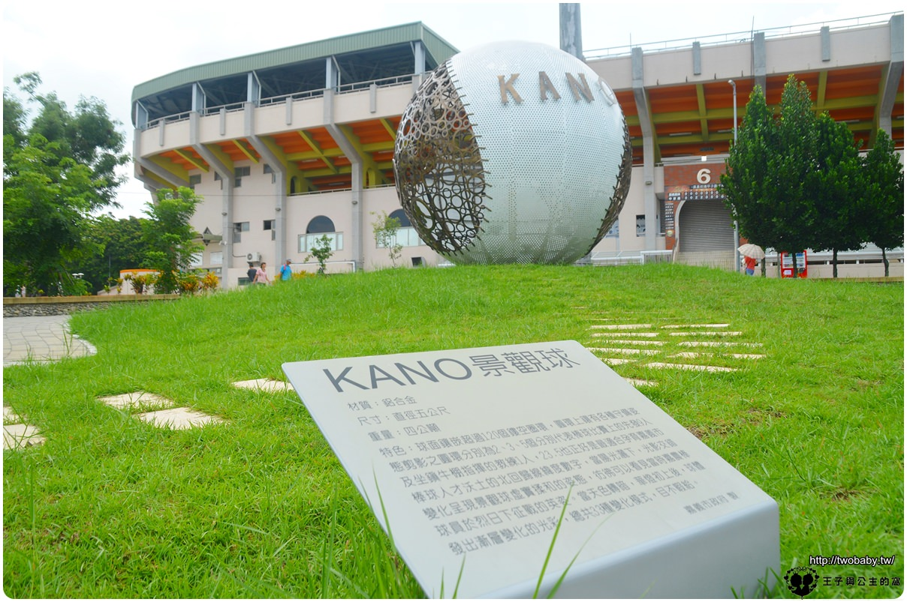
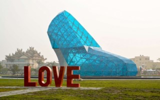
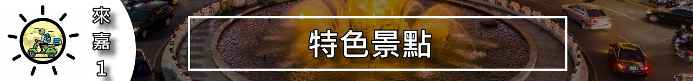

| 位於:嘉義縣太保市故宮大道888號 | |
故宮南院景觀特色： 故宮南院的園區幅員廣闊，除了有人工濕地、熱帶花園、水岸舞台等休閒區域，並設有至善湖、至德湖兩座人工湖。 館內策展以故宮本身的豐富典藏為主，並輔以國際借展，策劃各類精彩的展覽。 |
 |
| 位於:600嘉義市東區山仔頂249-1號 | |
嘉市KANO園區，106年8月落成，讓大家重新看到嘉義市令人驕傲的棒球史。 像是在家庭教育中心對面的戶外音樂劇場、棒球雕塑區，有銅製的球棒、手套座椅。 地面上鑲嵌著石板，仔細一看，原來是電影《KANO》裡的台詞。例如，「沒有退路的木瓜樹，一定會長出肥美的果實」、「想要打好棒球沒有捷徑，只有苦練」。 寬40公尺、長180公尺的「棒球世紀大道」，是以前嘉農棒球隊前往球場的必經之路。不管是地面上的石板，或是旁邊的棒球名人牆，都用心呈現嘉農棒球隊的發跡史，介紹當年打入甲子園亞軍的16名球員。 當然更不能錯過重達4公噸、直徑5公尺的KANO景觀球，以鋁合金製作，鑲嵌超過120個鏤空圈環，白天陽光閃耀、晚上七彩燈光秀，各有不同風情。想要玩借位拍攝，這裡也很適合！無論是要把球放在手中、或是踢球搞怪，各個方位都可以拍出創意！ |
 |
| 位於:嘉義縣布袋鎮新西路5號 | |
高跟鞋教堂 高跟鞋教堂造型相當亮麗，幸福意象工程施工相當不易，320餘片玻璃大小、安裝角度皆不同，必須克服高跟鞋的形狀及彎曲幅度，對細節要求極高。且於2016年6月獲得金氏世界紀錄，現為全世界最大的高跟鞋造型建築物。 |
 |
